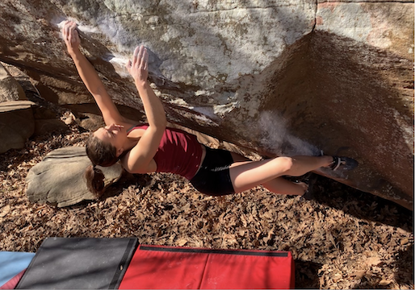
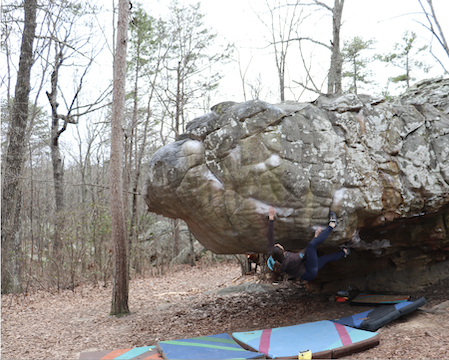

Leatherface is one of my favorite boulders I've tried. It's a V7 in Southern Illinois at a small spot called The Graveyard, on the 45 Degree Wall. It is pretty tall and scary, but I've practiced the top on a rope several times now. This is my top priority this fall, as I was already so close to sending in the spring.
Cain & Ankle

Cain & Ankle is a classic at the Holy Boulders, the most concentrated bouldering area in Southern Illinois. It goes at V8, and it starts in a scoop feature with a knee-bar, continues onto a slopey rail, has an exciting, foot-cutting move to a jug, and finishes with a secure but committing top out.
The Orb

The Orb is a V8 at Rocktown, Georgia. I have only been there once, but The Orb is such a beautiful and classic line, so I spent most of my energy working on it while I was there. It is a super long boulder with a hard top, but definitely a must-do.